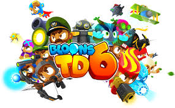

At my website we learn about Bloons Tower Defence 6(or BTD6). We will teach you about the Heroes,
Monkeys, Bloons, maps, power ups and Knowledge. This guide is more than just a summery, it will have
statagies and tips on how to use monkeys, hereos or power ups. This is a guide to beating BTD6.

Info
Here is some additional info that is needed before playing. You are on the monkeys side trying not to let the bloons go through the exit. If they go through the exit they will destroy your hearts. If you reach 0 hearts you die. You unlock more monkeys by leveling up and gaining experince for monkeys lets you unlock new upgrades.